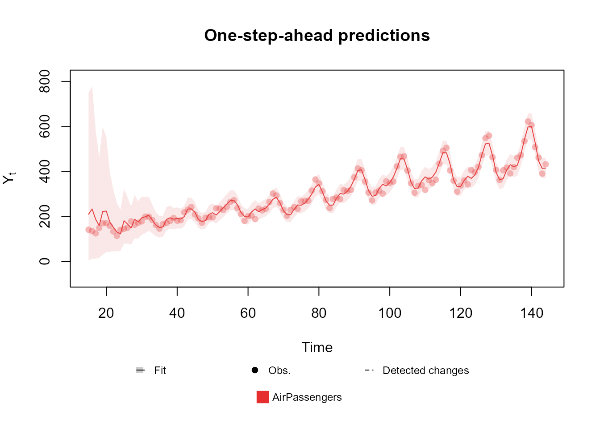
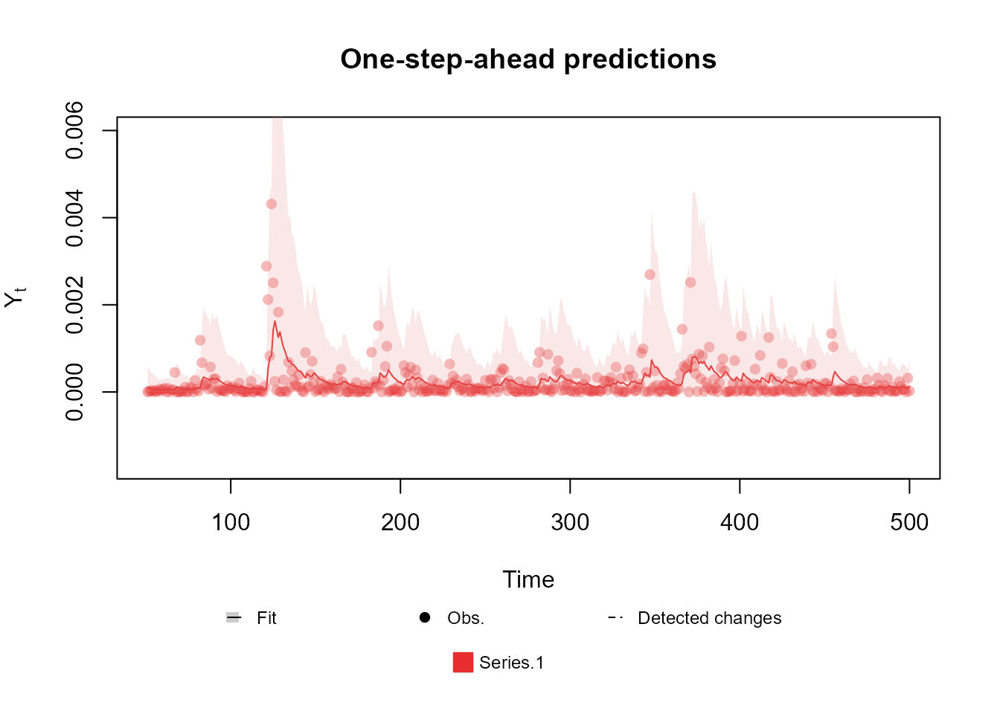
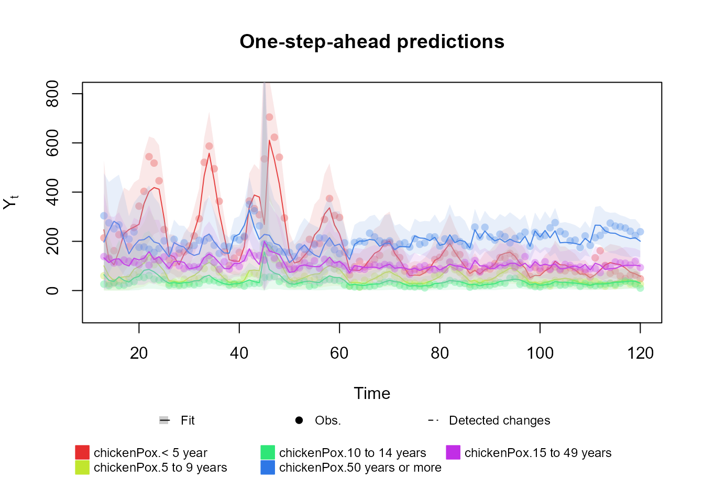
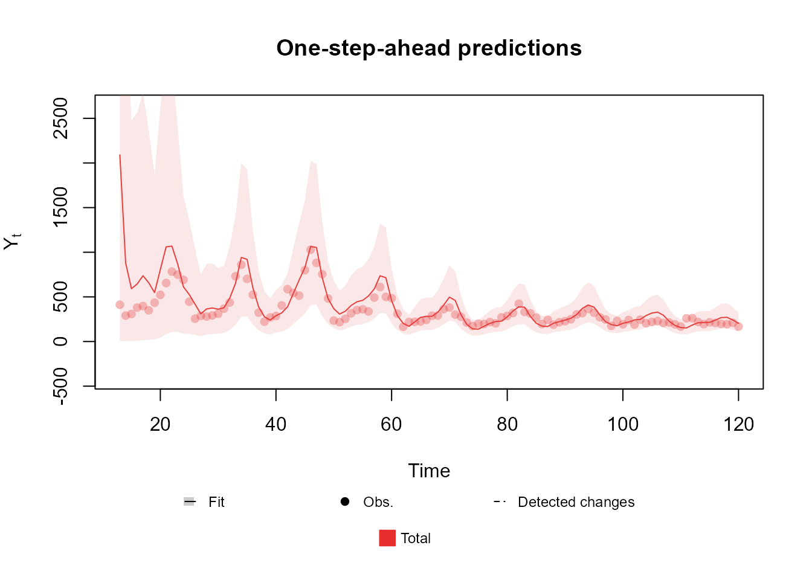

Table of contents
-
Creating the model structure: >
- A structure for polynomial trend models
- A structure for dynamic regression models
- A structure for harmonic trend models
- A structure for autoregresive models
- A structure for overdispersed models
- Handling multiple structural blocks
- Handling multiple linear predictors
- Handling unknown components in the planning matrix
- Special priors
-
Advanced examples:>
Creation of model outcomes
We have presented the tools for creating the structure of a DGLM model, specifically, we have shown how to define the relationship between the latent vector and the linear predictors , along with the temporal dynamic of . Now we proceed to define the observational model for and the relationship between and , i.e., the highlighted part of the following equations:
$$ \require{color} \begin{equation}\begin{aligned} \color{red}{Y_t|\eta_t }&{\color{red}\sim \mathcal{F}\left(\eta_t\right),}\\ {\color{red}g(\eta_t) }&{\color{red}= \lambda_{t}}=F_t'\theta_t,\\ \theta_t &=G_t\theta_{t-1}+\omega_t,\\ \omega_t &\sim \mathcal{N}_n(h_t,W_t), \end{aligned}\end{equation} $$
In each subsection, we will assume that the linear predictors are already defined, along with all the structure that comes along with them (i.e., we will take for granted the part of the model that is not highlighted), moreover, we also assume that the user has created the necessary amount of linear predictors for each type of outcome and that those linear predictors were named as ,…,.
Currently, we offer support for the following observational distributions:
- Normal distribution with unknown mean and unknown variance (with dynamic predictive structure for both parameters). As a particular case, we also have support for Normal distribution with known variance.
- Bivariate Normal distribution with unknown means, unknown variances and unknown correlation (with dynamic predictive structure for all parameters). As a particular case, we also have support for Multivariate Normal distribution with known covariance matrix.
- Poisson distribution with unknown rate parameter with dynamic predictive structure.
- Multinomial distribution with an known number of trials, arbitrary number of categories, but unknown event probabilities with dynamic predictive structure for the probability of each category. As particular cases, we support the Binomial and Bernoulli distributions.
- Gamma distribution with known shape parameter, but unknown mean with dynamic predictive structure.
We are currently working to include several distributions. In particular, the following distributions shall be supported very soon: Dirichlet; Geometric; Negative Binomial; Rayleigh; Pareto; Asymmetric Laplace with known mean.
Normal case
In some sense, we can think of this as the most basic case, at least in a theoretical point of view, since the Kalman Filter was first developed for this specific scenario (Kalman, 1960). Indeed, if we have a static observational variance/covariance matrix (even if unknown), we fall within the DLM class, which has an exact analytical solution for the posterior of the latent states. With some adaptations, one can also have some degree of temporal dynamic for the variance/covariance matrix (see Ameen and Harrison, 1985; West and Harrison, 1997, sec. 10.8). Yet, the kDGLM package goes a step further, offering the possibility for predictive structure for both the mean and the observational variance/covariance matrix, allowing the inclusion of dynamic regressions, seasonal trends, autoregressive components, etc., for both parameters.
We will present this case in two contexts: the first, which is a simple implementation of the Kalman Filter and Smoother, deals with data coming from an Normal distribution (possibly multivariate) with unknown mean and known variance/covariance matrix; the second deals with data coming from a univariate Normal distribution with unknown mean and unknown variance.
Also, at the end of the second subsection, we present an extension to the bivariated Normal distribution with unknown mean and unknown covariance matrix. A study is being conducted to expand this approach to the -variated case, for any arbitrary .
Normal outcome with known variance
Suppose that we have a sequence of -dimensional vectors , such that . We assume that:
where and is a known symmetric, definite positive matrix. Also, for this model, we assume that the link function is the identity function.
To create the outcome for this model, we can make use of the
Normal function:
Normal(mu, V = NA, Tau = NA, Sd = NA, data)Intuitively, the mu argument must be a character vector
of size
containing the names of the linear predictors associated with each
.
The user must also specify one (and only one) of V,
Tau or Sd. If the user provides
V,
is assumed to be that value; if the user provides Tau,
is assumed to be the inverse of the given matrix (i.e., Tau
is the precision matrix); if the user provides Sd,
is assumed to be such that the standard deviation of the observations is
equal to the main diagonal of Sd and the correlation
between observations is assumed the be equal to the off-diagonal
elements of Sd.
The data argument must be a
matrix containing the values of
for each observation. Notice that each line
must have the values of all categories in time
and each column
must represent the values of a category
through time. If a value of the argument data is not
available (NA) for a specific time, it is assumed that
there was no observation at that time, thus the update step of the
filtering algorithm will be skipped at that time. Note that the
evolution step will still be performed, such that the predictive
distribution for the missing data and the updated distribution for the
latent states at that time will still be provided.
Next, we present a brief example for the usage of Normal
function for a univariate outcome (the multivariate case works
similarly). We use some functions described in the previous sections, as
well as some functions that will be presented later on. For now, let us
focus on the usage of the Normal function.
level <- polynomial_block(mu = 1, D = 0.95, order = 2)
season <- harmonic_block(mu = 1, period = 12, D = 0.975)
outcome <- Normal(
mu = "mu", V = 6e-3,
data = c(log(AirPassengers))
)
fitted.model <- fit_model(level, season, outcome)
plot(fitted.model, plot.pkg = "base")
Notice that, since this is the univariate case, the data
argument can be a vector.
Univariated Normal outcome with unknown variance
For this type of outcome, we assume that:
To create an outcome for this model, we also make use of the
Normal function:
Normal(mu, V = NA, Tau = NA, Sd = NA, data)Just as before, the mu argument must be a character
representing the label of the linear predictor associated with
.
The user must also specify one (and only one) of V,
Tau or Sd, which must be a character string
representing the label of the associated linear predictor.
Similar to the known variance case, we allow multiple
parametrizations of the observational variance. Specifically, if the
user provides V, we assume that
;
if the user provides Sd, we assume that
;
if the user provides Tau, then the default parametrization
is used, i.e.,
.
The data argument usually is a
matrix containing the values of
for each observation. In cases where
is univariated, we also accept data as a line vector, in
which case we assume that each coordinate of data
represents the observed value at each time. If a value of data is not
available (NA) for a specific time, it is assumed that
there was no observation at that time, thus the update step of the
filtering algorithm will be skipped at that time. Note that the
evolution step will still be performed, such that the predictive
distribution for the missing data and the updated distribution for the
latent states at that time will still be provided.
Next, we present a brief example for the usage of this outcome. We
use some functions described in the previous sections, as well as some
functions that will be presented later on. For now, let us focus on the
usage of the Normal function.
structure <- polynomial_block(mu = 1, D = 0.95) +
polynomial_block(V = 1, D = 0.95)
outcome <- Normal(mu = "mu", V = "V", data = cornWheat$corn.log.return[1:500])
fitted.model <- fit_model(structure, outcome)
plot(fitted.model, plot.pkg = "base")Currently, we also support models with bivariate Normal outcomes. In this scenario we assume the following model:
Notice that represents the (and the covariance) between the series at time . To guarantee that , we use the Inverse Fisher transformation (also known as the hyperbolic tangent function) as link function.
For those models, `mu must be a character vector,
similarly to the case where
is known, and V, Tau and Sd must
be a
character matrix. The main diagonal elements are interpreted as the
linear predictors associated with the precisions, variances or standard
deviations, depending if the user used Tau, V
or Sd, respectively. The off diagonal elements must be
equals (one of them can be NA) and will be interpreted as
the linear predictor associated with
.
Bellow we present an example for the bivariate case:
# Bivariate Normal case
structure <- (polynomial_block(mu = 1, D = 0.95) +
polynomial_block(log.V = 1, D = 0.95)) * 2 +
polynomial_block(atanh.rho = 1, D = 0.95)
outcome <- Normal(
mu = c("mu.1", "mu.2"),
V = matrix(c("log.V.1", "atanh.rho", "atanh.rho", "log.V.2"), 2, 2),
data = cornWheat[1:500, c(4, 5)]
)
fitted.model <- fit_model(structure, outcome)Predictions
plot(fitted.model, plot.pkg = "base")Correlation
plot(fitted.model, linear.predictors = "atanh.rho", plot.pkg = "base")Notice that, by the second plot, the correlation between the series
(represented by atanh.rho, i.e., the plot shows
)
is significant and changes over time, making the proposed model much
more adequate than two independent Normal models (one for each
outcome).
Poisson case
In this case, we assume the following observational model:
In the notation introduced before, we have that our link function is the (natural) logarithm function.
To define such observational model, we offer the Poisson
function, whose usage is presented bellow:
Poisson(lambda, data, offset = data^0)As usual in the literature, we refer to the rate parameter of the
Poisson distribution as lambda (although, in the context of
this document, this might seem confusing) and the user must provide for
this argument the name of the linear predictor associated with this
parameter.
For the argument data the user must provide a sequence
of numerical values consisting of the observed values of
at each time. Since the
is a scalar for all
,
the user can pass the outcome as a vector or as a matrix with a single
column. If a value of data is not available
(NA) for a specific time, it is assumed that there was no
observation at that time, thus the update step of the filtering
algorithm will be skipped at that time. Note that the evolution step
will still be performed, such that the predictive distribution for the
missing data and the updated distribution for the latent states at that
time will still be provided.
Lastly, the offset argument is optional and can be used
to provide a measure of the scale of the data. If the offset is provided
and is equal to
,
then we will fit a model assuming that:
Bellow we present an example of the usage of this outcome. We use
some functions described in the previous section, as well as some
functions that will present later on, for now, let us focus only on the
usage of the Poisson function.
data <- c(AirPassengers)
level <- polynomial_block(rate = 1, order = 2, D = 0.95)
season <- harmonic_block(rate = 1, period = 12, order = 2, D = 0.975)
outcome <- Poisson(lambda = "rate", data = data)
fitted.data <- fit_model(level, season,
AirPassengers = outcome
)
plot(fitted.data, plot.pkg = "base")
Notice that, while creating the structure, we defined a linear
predictor named rate, whose behavior is being explained by
a second order polynomial trend and seasonal component defined by a
second order harmonic block. Since the value passed to rate
equals
in both blocks, we have that these components have a constant effect
(and equal to
)
on the linear predictor on all times, although the components
themselves change their values over time such as to capture the
behavior of the series.
Later on, when creating the outcome, we pass the name
'rate' as the linear predictor associated with
lambda, the rate (or mean) parameter of the Poisson
distribution.
This is a particularly simply usage of the package, the Poisson kernel being the one with the smallest amount of parameters. Moving forward, we will present outcomes whose specification can be a bit more complex.
Gamma case
In this subsection we will present the Gamma case, in which we assume the following observational model:
For this outcome we have a few variations. First, there’s a matter of parametrization. We allow the user to define the model by any non redundant pair of:
Naturally, the user CANNOT specify both AND or AND , as such specification is redundant at best, and incoherent at worst. Outside of those cases, in which the package will raise an error, any combination can be used by the user, allowing for the structure of the model to be defined within the variables that are most convenient (it may be easier or more intuitive to specify the structure in the mean and the scale , than on the shape and rate ).
Another particularity of the Gamma outcome is that the user may set the shape parameter to a known constant. In that case, the user must specify the structure to the mean parameter (he is not allowed to specify neither nor ). In general, we do not expect the shape parameter to be known, still, there are some important applications where it is common the use some particular cases of the Gamma distribution, such as the Exponential Model () or the model (). The estimation of the shape parameter is still under development, as such, the current version of the package does not have support for a unknown (a version of the package with a proper estimation for will be released very soon).
No matter the parametrization, the link function will always be the logarithm function, as such, given a certain parametrization, we can write the linear predictor of any other parametrization as a linear transformation of the original.
In the examples of this section, we will always use the parameters (when applicable) and , but the code used can be trivially adapted to other parametrizations.
Gamma(phi = NA, mu = NA, alpha = NA, beta = NA, sigma = NA, data = , offset = data^0)Similar to the Poisson case, the argument data must
provide a set of numerical values consisting of the observed values of
at each time. Since the
is a scalar for all
,
the user can pass the outcome either as a vector or as a matrix with a
single column. If a value of the argument data is not
available (NA) for a specific time, it is assumed that
there was no observation at that time, thus the update step of the
filtering algorithm will be skipped at that time. Note that the
evolution step will still be performed, such that the predictive
distribution for the missing data and the updated distribution for the
latent states at that time will still be provided.
The offset argument is optional and can be used to
provide a measure of the scale of the data. If the offset is provided
and is equal to
,
then we will fit a model assuming that:
Note that the above model implies that:
The arguments phi, mu, alpha,
beta and sigma should be character strings
indicating the name of the linear predictor associated with their
respective linear predictor. The user may opt to pass phi
as a positive numerical value, it that case, the shape parameter
is considered known and equal to phi for all
.
structure <- polynomial_block(mu = 1, D = 0.95)
Y <- (cornWheat$corn.log.return[1:500] - mean(cornWheat$corn.log.return[1:500]))**2
outcome <- Gamma(phi = 0.5, mu = "mu", data = Y)
fitted.data <- fit_model(structure, outcome)
plot(fitted.data, plot.pkg = "base")
Multinomial case
Let us assume that we have a sequence of -dimensional non-negative integer vectors , such that and:
where , with and .
Notice that is automatically defined by the values of , such that is always considered a known parameter. Also, it is important to point out that this model has only free parameters (instead of ), since the restriction implies that defining entries of defines the remaining value. Specifically, we will always take the last entry (or category) of as the reference value, such that can be considered as the baseline probability of observing data from a category (i.e., we will model how each relates to the baseline probability ).
To create an outcome for this model, we can make use of the
Multinom function:
Multinom(p, data, offset = data^0)For the Multinomial case, p must be a character
vector of size
containing the names of the linear predictors associated with
for each
.
The data argument must be a
matrix containing the values of
for each observation. Notice that each line
must represent the values of all categories in time
and each column
must represent the values of a category
through time. If a value of the argument data is not
available (NA) for a specific time, it is assumed that
there was no observation at that time, thus the update step of the
filtering algorithm will be skipped at that time. Note that the
evolution step will still be performed, such that the predictive
distribution for the missing data and the updated distribution for the
latent states at that time will still be provided.
The offset argument is optional and must have the same
dimensions of data (its dimensions are interpreted in the
same manner). The argument can be used to provide a measure of the scale
of the data and, if the offset is provided, such that, at each time
,
the offset is equal to
,
then we will fit a model assuming that:
At the end of this subsection we present a brief discussion about the implications of the inclusion of the offset and how to interpret it, as well as a explanation for the way we chose to include it.
Again, we present a brief example for the usage of this outcome:
# Multinomial case
structure <- (
polynomial_block(p = 1, order = 2, D = 0.95) +
harmonic_block(p = 1, period = 12, D = 0.975) +
noise_block(p = 1, R1 = 0.1) +
regression_block(p = chickenPox$date >= as.Date("2013-09-01"))
# Vaccine was introduced in September of 2013
) * 4
outcome <- Multinom(p = structure$pred.names, data = chickenPox[, c(2, 3, 4, 6, 5)])
fitted.data <- fit_model(structure, chickenPox = outcome)
summary(fitted.data)
plot(fitted.data, plot.pkg = "base")
Some comments on the usage of an offset
The model presented in this section is intend to describe a phenomena such that we have subjects that were distributed randomly (but not necessarily uniformly randomly) among categories. In this scenario, represent the probability of one observation to fall within the category , such that:
In some applications, it might be the case that represents the counting of some event of interest and we want to model the probability of this event occurring in each category. In this scenario, it is not clear how to use the multinomial model, since we will have that:
but we actually want to known:
Notice that we can write:
The above relation implies that:
If we pass to the offset argument of the
Multinom function a set of values
,
such that
,
then, by the specification provided in this section, we have that:
in other words, the linear predictors (and consequently, the model structure) will describe the probability that an event occurs in a specific class (instead of the probability that an observation belongs to that class, given the occurrence of the event).
To obtain itself (i.e. the probability of the event occurring given that the observation belongs to the category ), one can use Bayes formula, as long is known. Indeed, one can write:
Handling multiple outcomes
Lastly, the kDGLM package also allows for the user to jointly fit multiple time series, as long as the marginal distribution of each series is one of the supported distributions AND the series are independent given the latent state vector . In other words, let , be a set of time series such that:
and are mutually independent given . Note that the observational distributions does not need to be the same for each outcome, as long as each is within the supported marginal distributions. For example, we could have three time series (), such that is a Poisson distribution, is Normal distribution with unknown mean and precision and is a Gamma distribution with known shape. Also, this specification does not impose any restriction on the model structure, such that each outcome can have its own component, with polynomial, regression and harmonic blocks, besides having shared components with each other. See (dos Santos et al., 2024) for a detailed discussion of the approach used to model multiple time series using kDGLMs.
To fit such model, one must only pass the outcomes to the
fit_model function. As an example, we present the code for
fitting two Poisson series:
structure <- polynomial_block(mu.1 = 1, mu.2 = 1, order = 2, D = 0.95) + # Common factor
harmonic_block(mu.2 = 1, period = 12, order = 2, D = 0.975) + # Seasonality for Series 2
polynomial_block(mu.2 = 1, order = 1, D = 0.95) + # Local level for Series 2
noise_block(mu = 1) * 2 # Overdispersion for both Series
fitted.model <- fit_model(structure,
Adults = Poisson(lambda = "mu.1", data = chickenPox[, 5]),
Infants = Poisson(lambda = "mu.2", data = chickenPox[, 2])
)
plot(fitted.model)It is important to note that the Multivariate Normal and the Multinomial cases are multivariated outcomes and are not considered multiple outcomes on their own, but instead, they are treated as one outcome each, such that the outcome itself is a vector (note that we made no restrictions on the dimension of each ). As such, in those cases, the components of the vector do not have to be mutually independent given .
Also important to note is that our general approach for modeling multiple time series can not, on its own, be considered a generalization of the Multivariate Normal or Multinomial models. Specifically, if we treat each coordinate of the outcome as a outcome of its own, they would not satisfy the hypotheses of independence given the latent states . This can be compensated with changes to the model structure, but, in general, it is better to model data using a known joint distribution than to assume conditional independence and model the outcomes dependence by shared structure.
Special case: Conditional modelling
There is a special type of specification for a model with multiple outcomes that does not require the outcomes to be independent given the latent states. Indeed, if the user specifies the conditional distribution of each outcome given the previous ones, then no hypotheses is needed for fitting the data.
For instance, lets say that there are three time series and , such that each series follows a Poisson distribution with parameter . Then, follows a Poisson distribution with parameter and jointly follows a Multinomial distribution with parameters and . Then the user may model and :
structure <- polynomial_block(mu = 1, order = 2, D = 0.95) +
harmonic_block(mu = 1, period = 12, order = 2, D = 0.975) +
noise_block(mu = 1) + polynomial_block(p = 1, D = 0.95) * 2
outcome1 <- Poisson(lambda = "mu", data = rowSums(chickenPox[, c(2, 3, 5)]))
outcome2 <- Multinom(p = c("p.1", "p.2"), data = chickenPox[, c(2, 3, 5)])
fitted.model <- fit_model(structure, Total = outcome1, Proportions = outcome2)
plot(fitted.model, plot.pkg = "base")
See Schmidt et al. (2022) for a discussion of Multinomial-Poisson models. More applications are presented in the advanced examples section of the vignette.